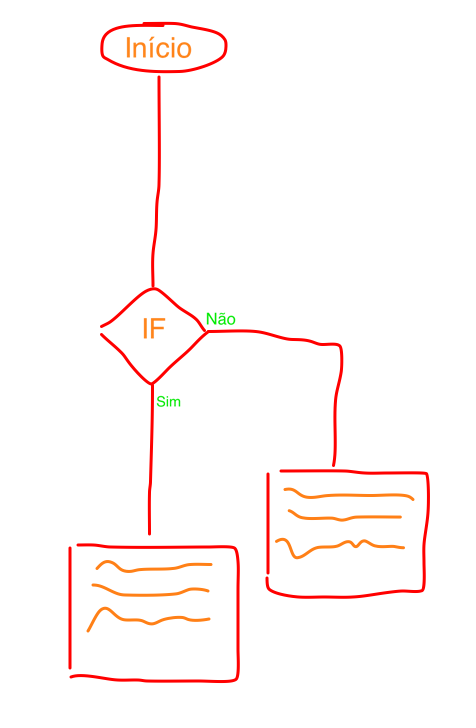

Conceitos computacionais
Até o momento, utilizamos instruções sequenciais para dar ordens ao computador. Agora iremos entrar em um mundo novo, onde teremos de definir decisões. Contudo, antes de apresentar os mecanismos da linguagem para tomada de decisões vamos aprender como efetuar comparações.
Abra o console e trabalhe alguns exemplos:
>>> -1 > 1
False
>>> 10 < 9
False
>>> 2+2 == 5
False
Repare que sempre obtemos como resposta False (falso) ou True (verdadeiro).
Também podemos aplicar estes operadores em outros tipos de dados, por exemplo, não-numéricos:
>>> "a" == "b"
False
>>> "a" < "b"
True
É importante destacar para os alunos dois pontos, quando utilizamos o operador de comparação de igualdade (==) estamos nos referindo o conteúdo das variáveis, estamos vendo se “a” é igual a “b”. Entretando quando utilizamos o operador > ou < a lógica é outra. Para entedermos é preciso demonstrar a função (built-in) ord().
(ord)
Repare que quando efetuamos a operação < na verdade estamos comparando se o código referente a letra a (97) é menor que o da letra b (98).
De posse dos conceitos de comparação podemos seguir e aprender a primeira instrução para efetuar decisões no Python, a palavra-reservada if.
Começemos com um exemplo:
(if)
Vamos analisar cada linha individualmente:
Fluxograma
Apresente os fluxogramas como ferramentas de apoio para estruturar o raciocínio. Desenhe no papel (ou lousa) como seria o trecho de execução de parte do programa. Abaixo temos a condição if que dependendo da reposta sim/não executa um bloco de código diferente.
Não há regras fixas para a construção do fluxograma, a proposta aqui é apenas esboçar o fluxo do programa.
Indentação
Repare que as instruções das linhas 4 e 5 estão um pouco deslocados para a direita. A este recuo dá-se o nome de indentação ou seja, é um bloco de código que é executado dentro de um contexto. No exemplo acima, as duas linhas print só são executadas se confirmarem a condição definida no if.
Para a separação de blocos de código, a linguagem Python usa espaços em branco.
Coloque o exercício anterior em blocos indentados.
Veja mais exemplos aqui.
Para exemplificar vamos definir um protótipo do comando if que não faz absolutamente nada.
if True:
pass
Veja que a condição é sempre verdadeira (True) e a palavra-reservada pass faz com que o código seja validado sem que ainda precisemos pensar na implementação caso a condição do if seja confirmada.
Mais exemplos com if.
(ex_if)
Por fim, apresente a necessidade de ter o segundo caminho, caso a condição da sentença não seja confirmada, para tal apenas complementamos com a palavra else.
Proposta
(prob)
Quando fazemos randint(1,2) podemos ter como resposta 1 ou 2 logo, cada uma das resposta, em média, aparecerá em 50% dos casos.
RPG
Pergunte na sala se algum dos alunos conhece jogos de RPG (Role-playing Game), eles podem dar dicas de como estrutura uma aventura.
Atividades para a empresa
TBA
Comentários: Educador, clique no link abaixo (Show Comments) e utilize este espaço para fazer comentários sobre este plano
Show Comments{kind=link}